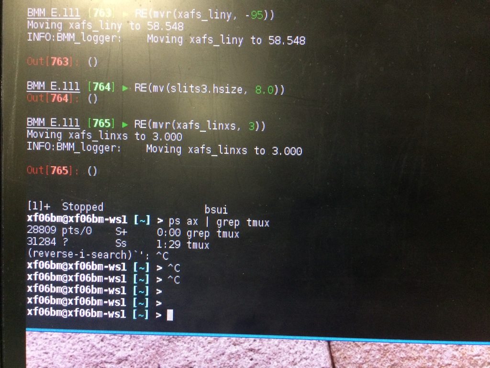
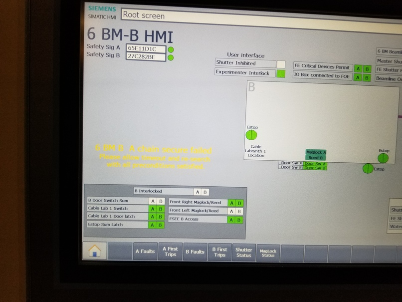

9. Troubleshooting¶
In this section, solutions are given for problems that BMM's visitors occasionally encounter.
9.1. Exiting BlueSky¶
There are a small number of ways that you can unintentionally find yourself outside of BlueSky. One of them is to accidentally hit Ctrl-z, which is unfortunately located right next to Ctrl-c.
Ctrl-z serves to suspend BlueSky, temporarily returning you to the Unix command line. It looks like this:
{kind=link}

Fig. 9.1 Accidentally exiting BlueSky and returning to the Unix command line.
To resume BlueSky, type the command fg and hit enter. You will find yourself back at the BlueSky prompt and can carry on normally.
9.2. Failed search¶
Sometimes the hutch search fails for mysterious reasons. A likely cause is that the door “bounced” a bit as it closed. This confuses the circuit that checks to see that the magnetic latch holding the door closed in engaged.
When that (or some other thing out of your control) happens to confuse the personnel protection system, the search fails and reports the failure by printing a message in yellow text on the HDMI screen. Here is what that looks like:
{kind=link}

Fig. 9.2 The hutch HDMI display showing the yellow text of a failed search.
When this happens, it is usually sufficient to simply repeat the search. If the yellow text failure happens again, call the floor coordinator at extension 5046.
This manual is copyright © 2018 Bruce Ravel
 This document is licensed under The Creative Commons Attribution-ShareAlike License.
This document is licensed under The Creative Commons Attribution-ShareAlike License.
If this document is useful to you, please consider supporting The Creative Commons.